越南珍寺劇場3、そろそろお寺巡りにいかなきゃね。
ダラットでまず向かったのは市街の北の外れにあるリンクアン寺。
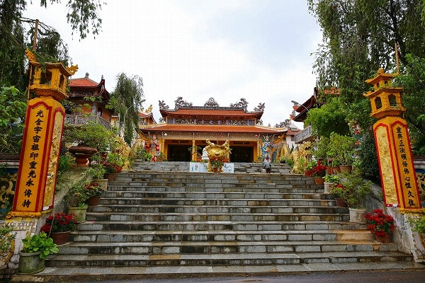
お寺の目の前が見渡す限り真っ赤な赤土の造成地。
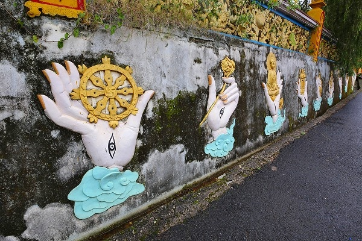
入口の塀には様々な印相のレリーフが並んでいる。目が付いててチョット怖い。
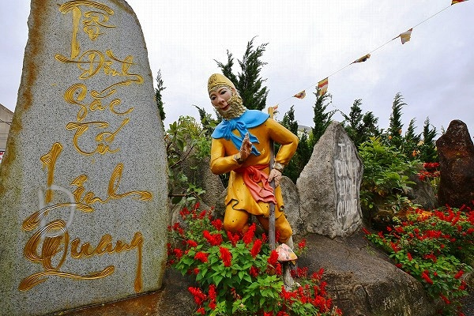
さらに孫悟空がお出迎え。
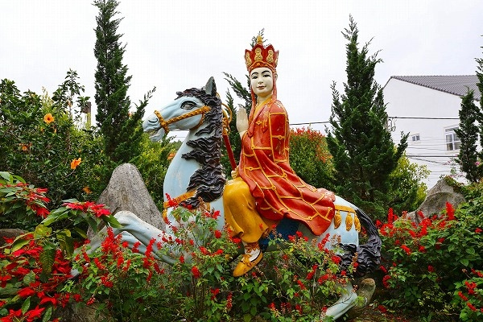
もちろん三蔵法師も。
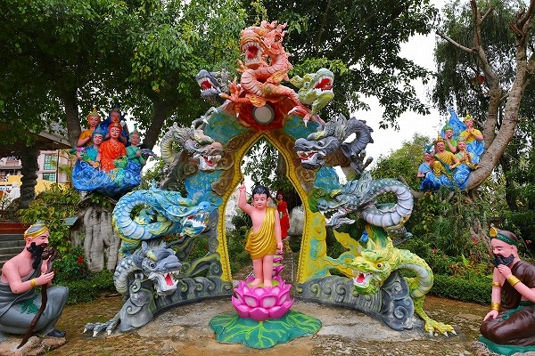
他にも様々な彫像が点在している。
釈迦生誕のシーンとか。
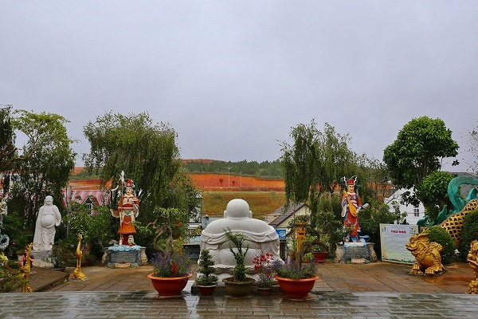
目の前の造成地はグラウンドが出来るのだとか。
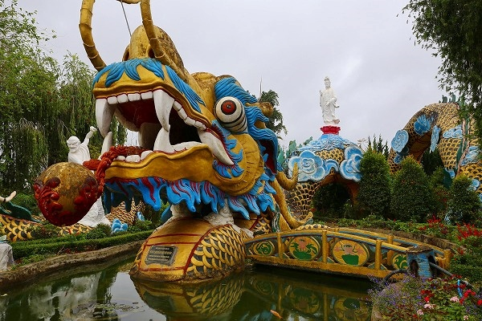
そしてこの寺で最も目立つのが、この池の中にいる巨大龍。
背中には大きい観音様を載せている。
橋を渡って内部にも入れるのだ。狭いけど。
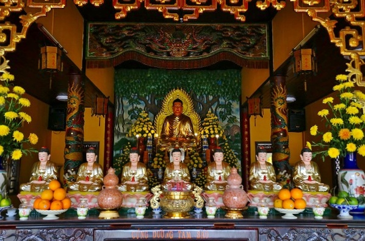
本殿内部。
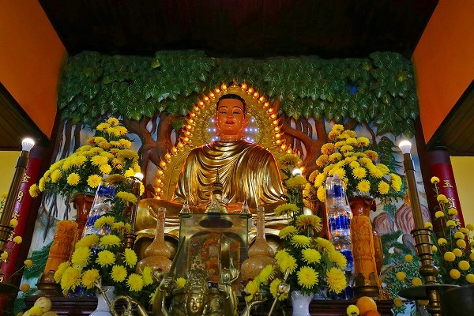
ご本尊はもちろん電飾光背。
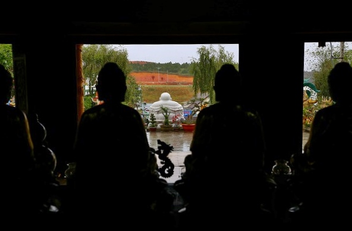
中から外を見ると赤土の造成地が見える。
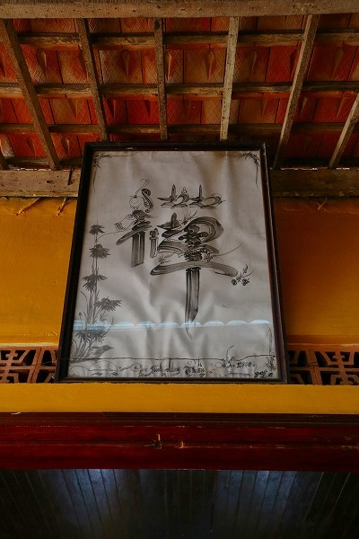
カックイイ禅の字。
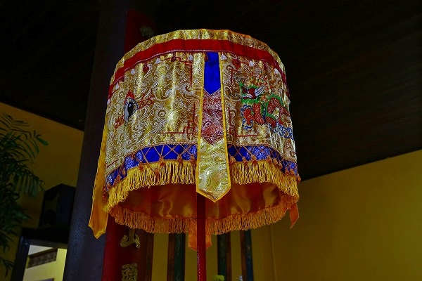
キレイな刺繍。ベトナムは刺繍の技術も高い。
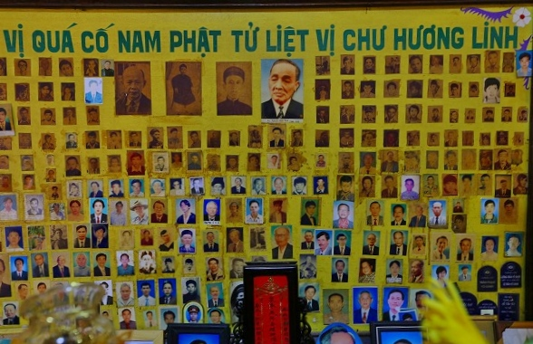
亡くなった人の写真だろうか、大量の写真が貼ってあった。
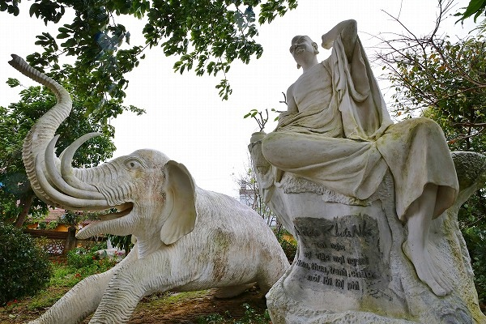
邪悪な象。
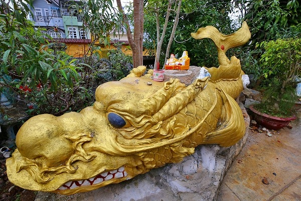
龍？鯱？
謎の生き物がいた。
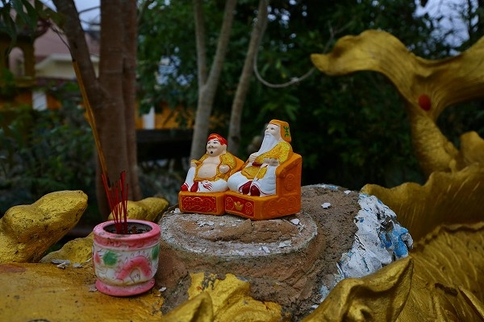
背中には神様がちょこんと座っていた。
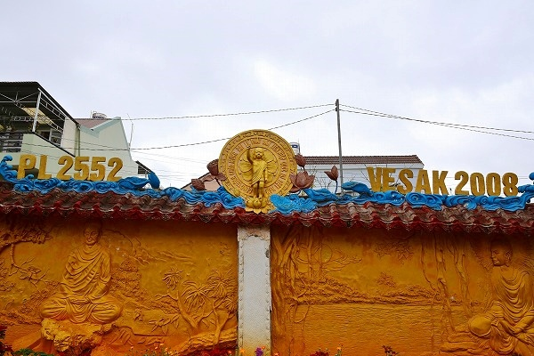
境内にはいろいろな像が点在していたが、巨大な龍以外は若干小粒感が否めない。
まだまだ増殖するような雰囲気なので、今後に期待、ということで。
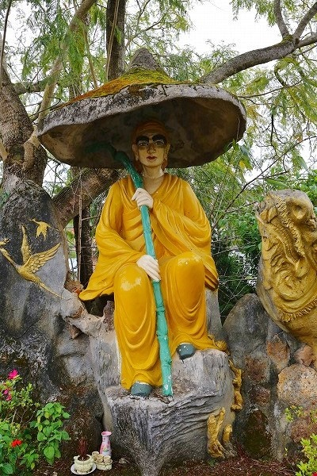
その頃にはきっと目の前の造成地もりっぱなグラウンドになっていることでしょう。
次へGO！